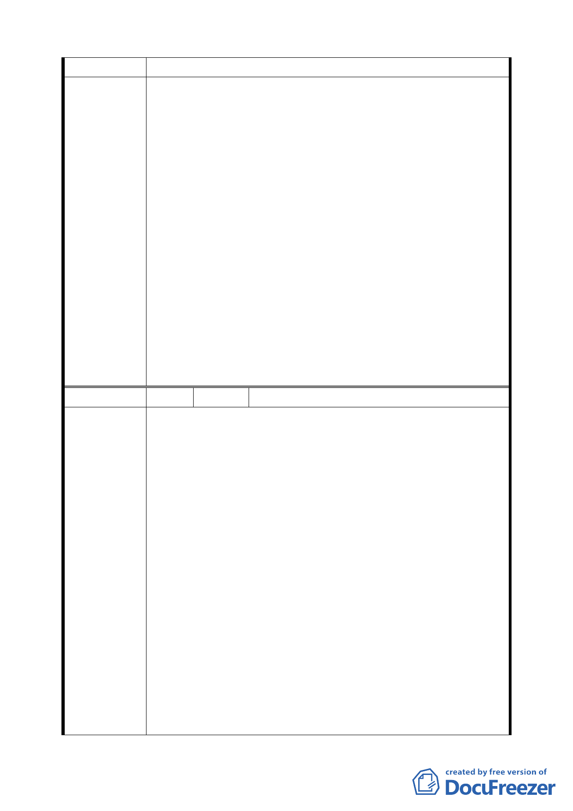

即可。
1.同意發展局所提「為維持高品質商務機能，商業區不宜放
寬作住宅使用」，維持原公展計畫。
2.同意發展局所提說明：本局 97 年 4 月 23 日邀集法規會、
捷運局、建管處及地政處等單位召開研商會議，確定綜合
設計獎勵之適用與是否設定地上權（捷運站體所佔基地面
積）無關，如可符合本市土地使用分區管制規則及本市綜
合設計公共開放空間設置及管理維護要點等相關法令規定
委員會決議
之有效開放空間，即可適用獎勵規定。
3.同意發展局所提修正「本計畫區停車空間及離街裝卸場設
置標準，應按「臺北市土地使用分區管制規則」之相關規
定辦理。C3 至 C11 及 C14 街廓之汽車停車空間依該管制規
則停車空間之 1.8 倍留設，惟得視交通衝擊影響情形，經交
通主管機關同意調整實際設置數量」。
4.同意發展局所提「為引導建物合理使用，避免及預防建物
違規使用，參考一般辦公大樓之合理設計，公共設備服務
空間仍應集中留設」，維持原公展計畫。
編 號 16 陳情人 陳浩雲建築師事務所（R2 住宅區）
1.本所受委託設計規劃座落臺北市南港區經貿段 9-4 地號建
築基地設計規劃案，該基地屬街廓編號 R-2 住宅區(供住宅
使用)，依都市設計管制要點第八點規定，本基地之最小前
院深度為 5 公尺，最小後院深度為 3 公尺，最小後院深度
比為 0.4。
2.都市設計管制要點第二五點規定，前述未規定事項則適用
「臺北市土地使用分區管制規則」第二種住宅區之規定。
3.本基地經辦理都市計畫區段徵收交地後，地形呈寬扁形，
陳情理由
正面臨接 12 公尺計畫道路(已開闢完成)，背側與兩端均為
鄰地。基地留設前院 5 公尺，後院 3 公尺，並檢討後院深
度比後，能配置建築物之深度，最窄處只餘 2 公尺，最寬
處亦不過 9 公尺。實有配置建築物之困難。明顯判斷本基
地若依前院全面退縮 5 公尺方式設計，基地恐將難以開發。
本基地區段徵收交地後，基地形狀雖不易設計，卻並非畸
零地，亦無與鄰地進行畸零地調處之條件。
4.依臺北市全市通用之「臺北市土地使用分區管制規則」第
二條用語定義，前院深度為建築物前牆或前柱中心線與前
31